Introduction
Objective
Allow anyone to shop, transfer money, and more without a debit or credit card or the need to visit a physical bank or store
Reason
The world of buying and selling has changed—more and more transactions happen online without the need for a physical credit or debit card. The amount of online sales and transactions is and has been steadily increasing, consumers are subscribing to a multitude of online services, and high street stores are closing in large numbers.
There are many factors that make online purchases favorable, from cost and convenience, to security, to name but a few. This ecommerce trend has been catalyzed by the global coronavirus pandemic in 2020, forcing many people to stay inside, wary of going to the store and of using their physical cards to pay for items.
With it, this trend has brought forward the problem of how to make purchases securely and efficiently. How can your banking and card details be stored in one place? How can this same tool be used to make transactions or transfers in online stores and overseas? What’s important to users when buying online?
To gain a better understanding of our problem I have started with competitive analysis to understand the market place, what solutions (and how were the implemented) already exist, identify competitors strengths and pinpoint gaps.
I choose PayPal & G Pay for this research because of their strong market position and for the fact that both of them offer similar functionality to what is expected of this development project.
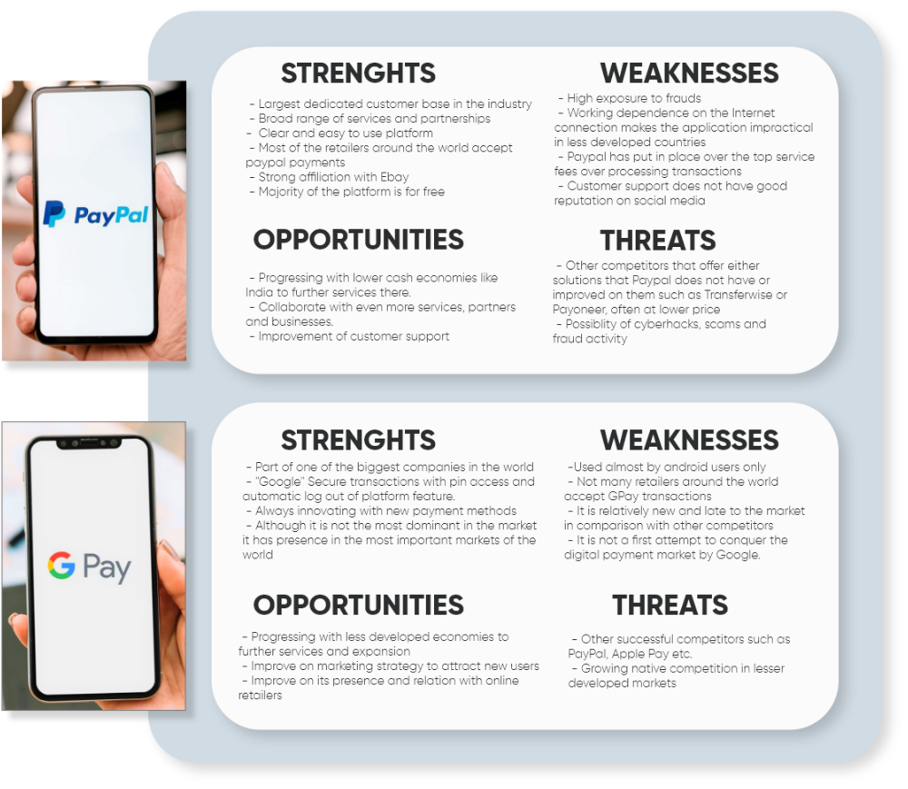With gaps in the market and opportunities identified I have turned to my primary research to collect additional data from potential users to help drive the design decisions. For quantitative data I have conducted surveys and for qualitative data I selected interviews.
Goals
To better understand user behaviour around the finances, online shopping, budgeting, saving money and money transfers.
To determine which tasks users would like to complete using PlutoPay web responsive app
Documenting user pain points with existing finance and budgeting apps available on the market.
Collecting data on the context in which users would use banking and budgeting services.
After user research next step for me was to structure and analyse all date to unveil any finding and insights. The affinity map was the perfect tool for this as it helps to identify the natural relationships between large number of ideas.
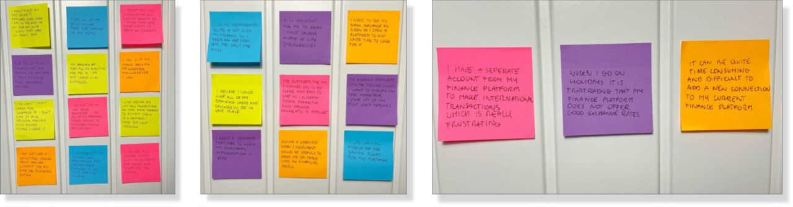After user research next step for me was to structure and analyse all date to unveil any finding and insights. The affinity map was the perfect tool for this as it helps to identify the natural relationships between large number of ideas.
Problem statement
Our users need a way to manage their personal finances and transactions in one place that is easily accessible because in the modern day environment it will allow users to better balance their multiple finance tools. We will know this to be true when we see increased amount of users utilising our platform to efficiently manage their financial needs.
User Personas
From foundation based on my research and analysis I was able to construct two user personas. Those formed a base for creating emotional connection between our goal defined in problem statement and actual target demographic that I am designing for. It helps to have a "face" not just the facts during this process.
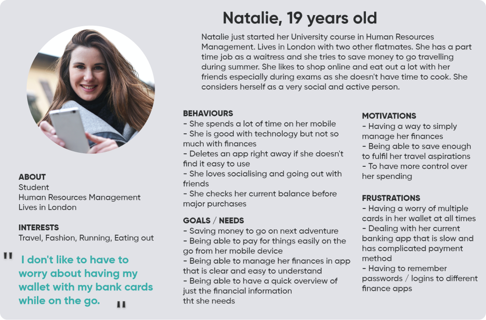 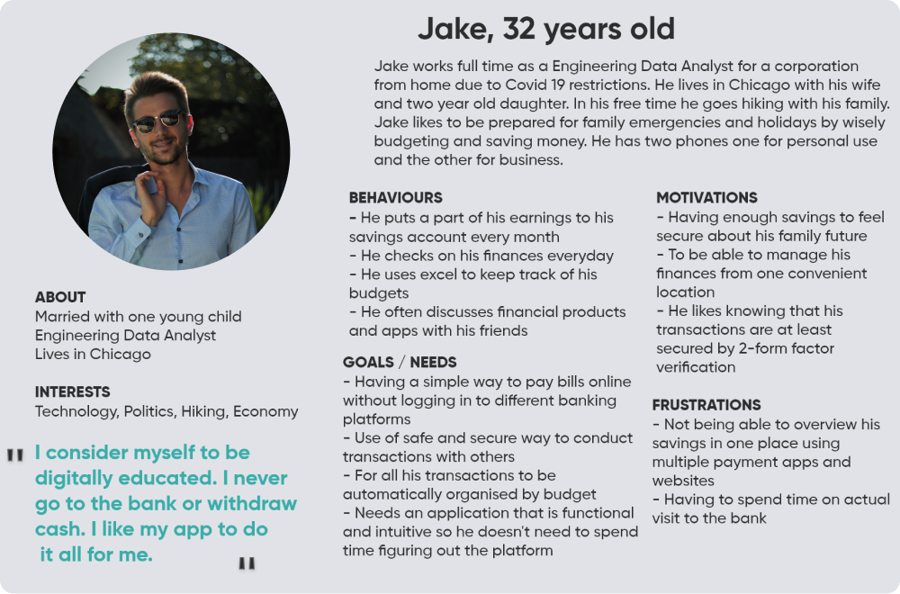USer Flows
I have set up user flows to bring focus to what and how users need to accomplish their goal in most straightforward way. Looking at their goal from this perspective helps creating better user experience as it put the user at te heart of the process.
Sending a payment flow
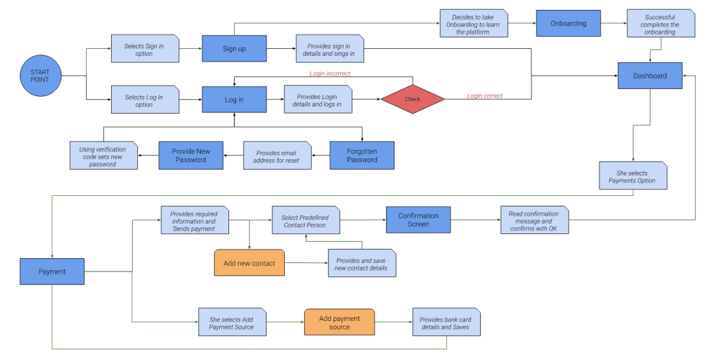Create a new saving goal flow
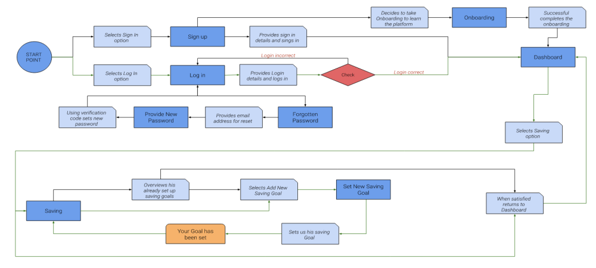The card sorting revealed that the grouping of the subcategories were slightly different than originally expected. Minor changes were applied to the sitemap in order to put sub items in the categories the testers felt appropriate for
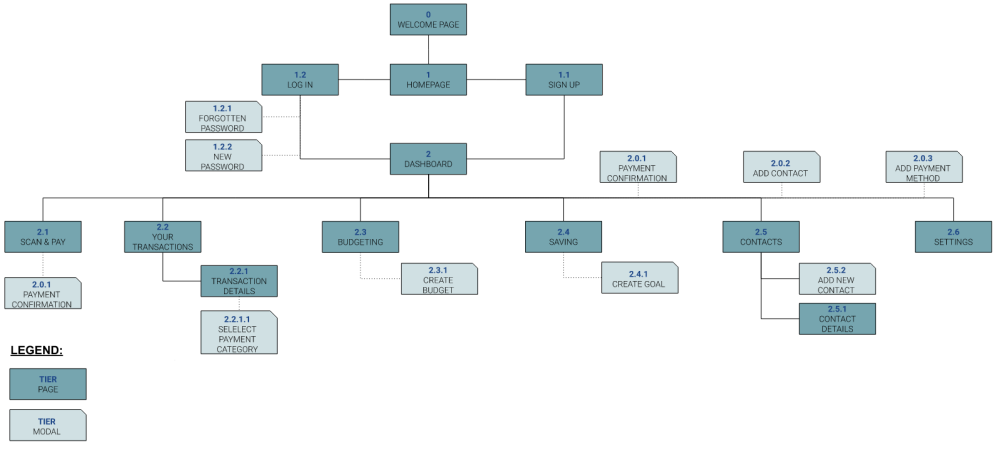Low Fidelity
The card sorting revealed that the grouping of the subcategories were slightly different than originally expected. Minor changes were applied to the sitemap in order to put sub items in the categories the testers felt appropriate for
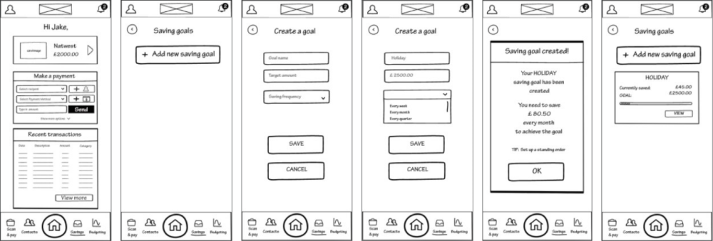Low Fidelity
Further design iterations and testing allowed me to come up with more detailed mid fidelity wireframes to present basic placement and functionality of the user interface.
Further design iterations and testing allowed me to come up with more detailed mid fidelity wireframes to present basic placement and functionality of the user interface.
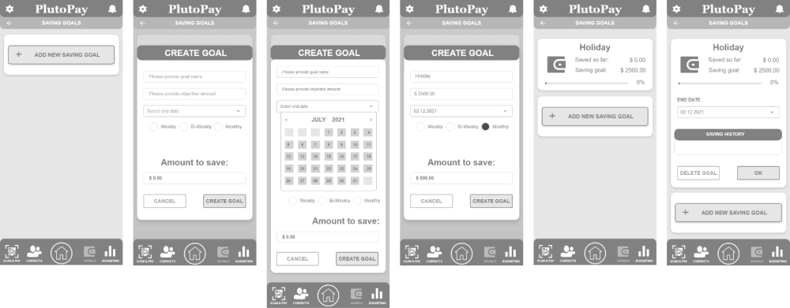Low Fidelity
After refinements to user interface I was able to produce high fidelity wireframes to better visualise information architecture, actual content and intended design language.
After limited testing including my group of peers and some guerrilla testing, following improvements to the design were implemented to improve the user experiance & expectations:
- users need a way to apply only required filters in transactions history
- users required their saving goal to provide more information in the overview
- over all typography review concentrated on readability and hierarchy
Prototype
Digital high fidelity wireframes enabled me to create clickable prototype that was essential to communicate with stakeholders as well as to conduct further testing that would drive further development, refinement and iterations of the application.
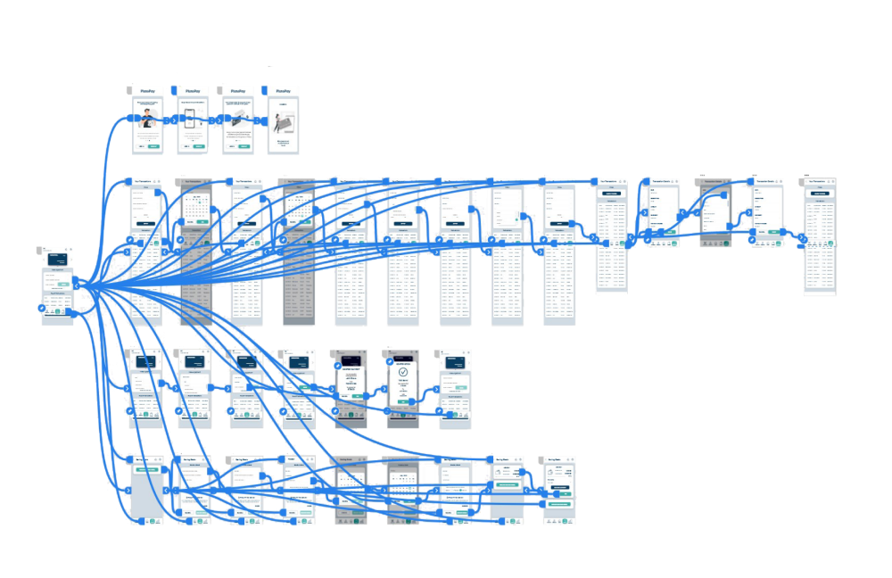Usability Testing
Before commencing actual testing of my design I have created usability test plan that outlines scope, goal and logistics of the testing sessions. It will also serve as documentation for stakeholders included in the process.
To avoid errors, keep my testing sessions consisted across participants and to maintain compliance with ethical & moral standards I also created usability test script. This also ensured consistent information gathering approach with the goals I previously outlined.
6 Participants
REMOTELY MODERATED SESSIONS
40-45 MIN PER SESSION
Reserch Report & Analysis
All sessions were recorded with participants consent for detailed review. Analysis included interpreting language, tone of voice, mouse movements and confidence performing tasks in scenario and information gathering to get emotional picture of user experience.
I have translated all the finding into rainbow sheet and structured feedback by participant. This have allowed me to get frequency and severity of the issues at hand.
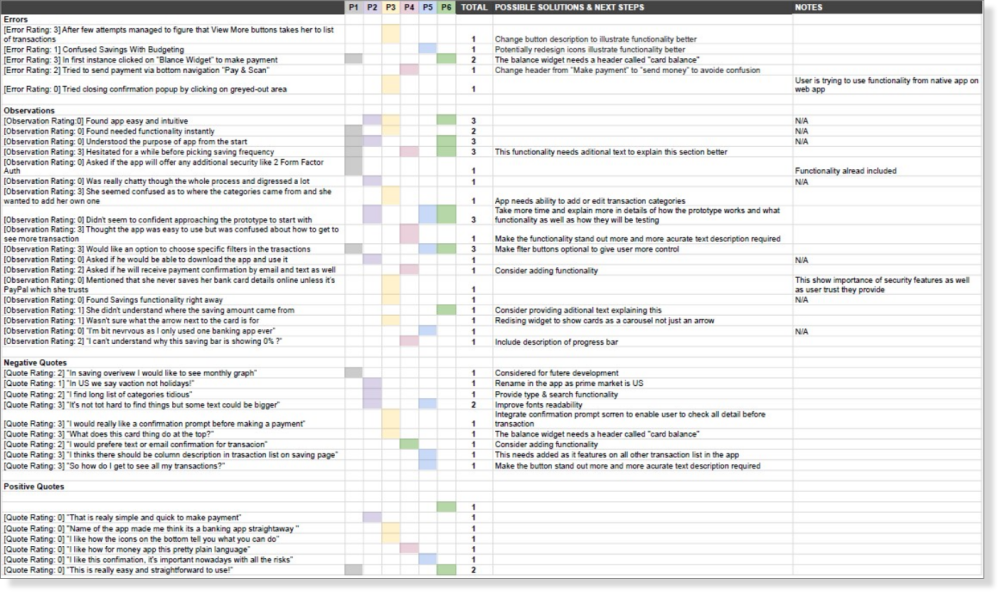